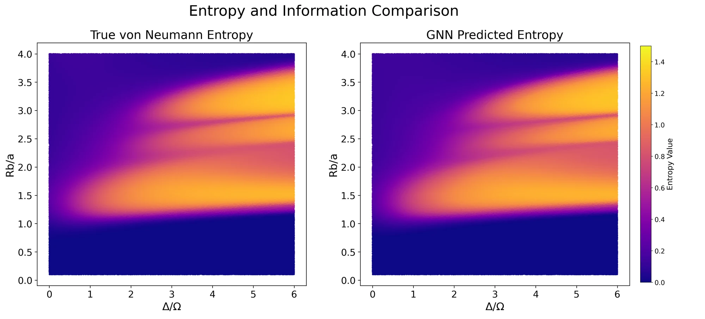
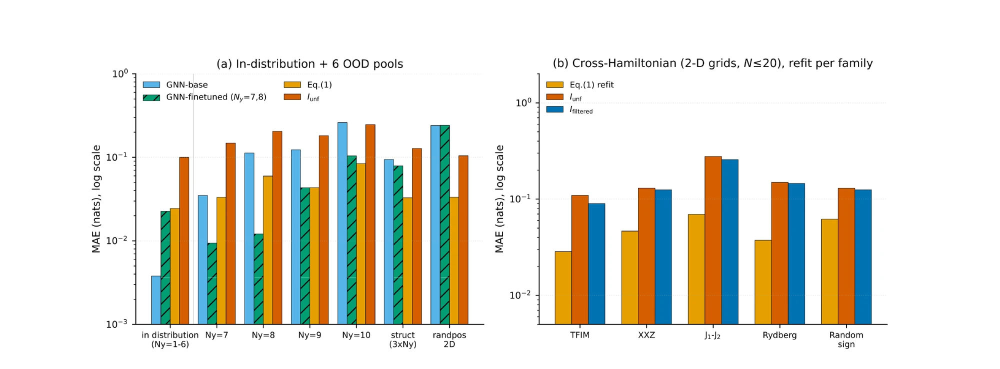
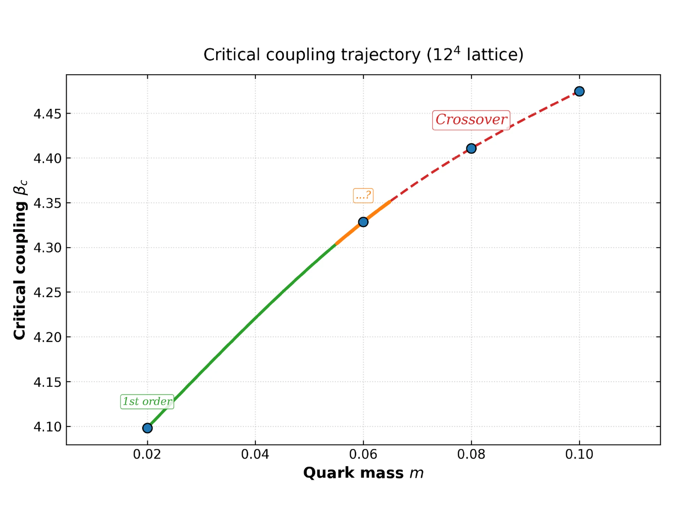
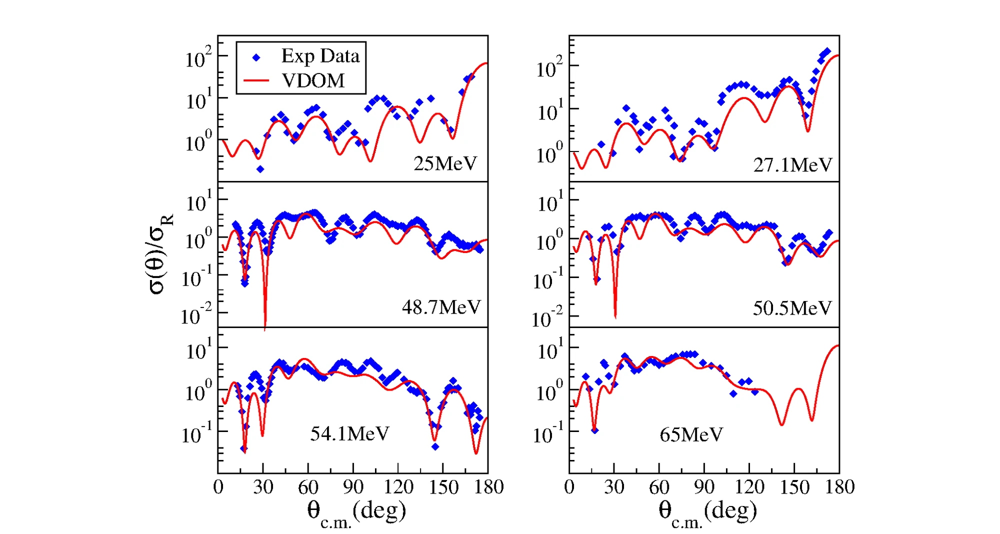

error, estimating quantum entanglement directly from measurements
4
Active research span
2022 – present
years of research output
01
General Notes
1.
Physics research spanning nuclear scattering, quantum many-body systems, and lattice gauge theory. The computational side ties it together: numerical simulation, statistical modeling, and machine learning, applied to whichever system is in question.
2.
Currently an AI engineer at Logatta, building production AI tools, while continuing physics research alongside it.
02
Research & Publications
P1
Predicting the von Neumann entanglement entropy using a graph neural network
2025Machine Learning: Science and TechnologySole author
Master's thesis work. A graph neural network reads the raw bitstring measurements from a two-leg Rydberg-atom ladder and predicts its von Neumann entanglement entropy directly, without reconstructing the full quantum state. The network has 19.9M parameters across six message-passing layers, alternating GINEConv and TransformerConv blocks. It reaches 1.44% mean absolute percentage error, cutting absolute error by 96.6% against the classical mutual-information estimator. Fine-tuning on a fraction of the original training data improves accuracy on rung counts beyond the original training range by 49% on average.

FIG. 7True (left) vs. GNN-predicted (right) entanglement entropy across the Rydberg-ladder phase diagram, as a function of detuning ratio and blockade radius.
An interpretable closed form for entanglement entropy from bitstrings, guided by a graph neural network
2026PreprintSole author
What does the trained network from the entanglement-entropy paper above actually depend on to make its prediction? This paper probes that with causal interventions such as attention-routing and activation-patching. The answer: two-point correlators on the boundary between the two subsystems. Restricting an exhaustive search to that boundary-correlator set isolates a six-term closed form, the winner among 177,100 candidate six-feature subsets, reaching 0.024 nats mean absolute error. The network is still more accurate in distribution, but the closed form generalizes better: it matches or beats the network on five of six out-of-distribution test pools. Once refit for scale, the same form also holds up to 100-atom systems.

FIG. 1Headline summary: mean absolute error (nats, log scale) for the GNN, the six-term closed form, and the mutual-information baseline, across in-distribution and out-of-distribution test pools (a), and refit per Hamiltonian family on five further systems (b).
2026PreprintFirst authorwith M. Hite, D. Floor, Y. Meurice
Maps a phase transition in a 12-flavor lattice QCD theory: reconstructs the density of states from Monte Carlo simulations, then locates where the partition function vanishes, across four quark masses on lattices up to 124. At the smallest quark mass, the finite-size scaling matches a genuine first-order transition; as mass increases, that line is hypothesized to end at a second-order critical point before giving way to a smooth crossover at the largest masses.

FIG. 1Expected phase diagram: the critical-coupling trajectory separates a first-order transition (small quark mass) from a crossover (large quark mass).
Modeling α-nucleus elastic scattering using a velocity-dependent optical potential
2024Physical Review CFirst author
Undergraduate thesis. Fits a velocity-dependent optical-potential model to elastic-scattering data for alpha particles on nuclei from 12C to 208Pb, at incident energies from 18 to 70 MeV. The model's added surface-gradient term, with engineered energy-dependent features, targets anomalous large-angle scattering (ALAS), a longstanding discrepancy between standard optical-model fits and measurement. It cuts that error by up to 90% relative to standard models. For the lightest nucleus studied, the best-fit potential depth changes behavior sharply around 28 MeV, consistent with a known resonance in that scattering channel.

FIG. 1Best-fit angular distributions for alpha scattering on carbon-12 at six incident energies: the velocity-dependent model (red) reproduces the experimental data (blue), including the large-angle rise characteristic of ALAS.